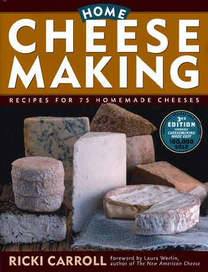
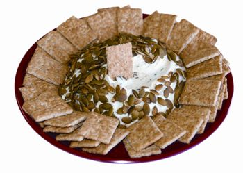

If you’ve never tried making cheese, you’ll be amazed to learn that it can be as fast and easy as baking a pie. The only equipment you need is a stainless steel pot, measuring spoons, cheesecloth and a dairy thermometer.
First and foremost, milk. Using fresh, whole milk from grass-fed cows (from a nearby farm) will produce the best results. (For local suppliers, click here.) Some cheese makers pasteurize even fresh, raw milk, because the native bacteria may compete with the specific molds and bacteria you want to proliferate. If you want to pasteurize raw milk, heat it to 145 degrees Fahrenheit in a stainless steel pot or double boiler. Hold the temperature there for 30 minutes, then chill the pot until the temperature of the milk dips to 40 degrees.
Low-fat milk also can be used to make cheese, but you’ll get less cheese as a result. Store-bought milk will work, too. Just be sure to avoid any brands that say “ultra-pasteurized.” Ultra-high-temperature pasteurization allows milk to be shipped long distances and stored without refrigeration, but its coagulating ability is damaged in the process. Ultra-pasteurized milk can sit around for many weeks without spoiling, but it can’t be made into cheese.
Get some culture. Cheese cultures and starters include bacteria, molds and acids that encourage coagulation and/or help develop unique flavors. They can be found at natural foods stores and specialty suppliers. Try New England Cheesemaking Supply or Leeners.
Rennet comes from what? Rennet, which comes in liquid, tablet or powder form, contains enzymes that cause milk solids to separate from clear whey and form curds. Traditionally, rennet is made from the stomach lining of an infant ruminant - aka grazing - animal. (The enzymes help the animal digest its mother’s milk.)
Although most store-bought cheeses rely on animal-based rennet, vegetable rennet also is widely available. It’s made from plants that have coagulating properties, such as fig and thistle.
Better not forget the salt. Salt enhances flavor, draws out excess moisture and acts as a preservative. Avoid iodized salt, because it can put the brakes on active starter bacteria. Specialty cheese salt is coarser than regular table salt, and is non-iodized.
Clean up the water. It’s best to use filtered water when making cheese, as some water supplies contain compounds that compromise milk’s ability to be made into cheese.
1 gallon milk
1 1⁄2 tsp powdered citric acid dissolved in 1/4 cup cool water
1/4 tsp liquid rennet diluted in 1/4 cup cool water (if using rennet tablets, follow conversion instructions on the package)
1 to 2 tsp cheese salt
Slowly heat the milk to 55 degrees Fahrenheit in a stainless steel pot. While stirring, slowly add the citric acid solution to the milk and mix thoroughly but gently.
Heat the milk to 88 degrees over medium-low heat. The milk will begin to thicken like yogurt.
Gently stir in the diluted rennet for 30 seconds. Then don’t disturb the milk while you let it heat to between 100 and 105 degrees. In about 5 to 8 minutes, the curds should begin to break up and pull away from the sides of the pot. Turn off the heat.
The curds will look like thick yogurt and become a bit shiny, and the whey will be clear. If the whey is still milky white, wait a few more minutes before turning off the heat. Scoop out the curds with a slotted spoon and put in a bowl. Reserve the whey. Press the curds gently with your hands, squeezing out as much whey as possible.
Heat the reserved whey to 175 degrees. Shape the curds into several small balls, rolling them between your palms. Put them, one at a time, into a ladle, and dip them in the hot whey for several seconds. Then gently fold the cheese over and over (as in kneading bread) with a spoon or your hand. (You’ll want to don rubber gloves at this point, as the cheese will be extremely hot.) This distributes the heat evenly throughout the cheese, which will not stretch until it is too hot to touch (145 degrees inside the curd).
Repeat this process several times until the curd is smooth and pliable; mix in salt after the second time. When the cheese stretches like taffy, it’s done. If the curds break instead of stretch, they are too cool and need to be reheated.
When the cheese is smooth and shiny, roll it into balls and eat while warm. Although best eaten fresh, it can be stored in the refrigerator for a week or so. Yield: About 1 pound
2 quarts cream or half-and-half, at room temperature (about 72 degrees)
1 packet direct-set mesophilic starter or 4 ounces prepared mesophilic starter
Cheese salt (optional)
Add the starter to the cream, and mix thoroughly. Cover and let sit for 12 hours; a solid curd will form.
Pour the curd into a colander lined with cheesecloth. Tie the cheesecloth into a bag, and hang from a hook until the bag stops dripping, about 12 hours. Changing the bag once or twice can speed up the process.
Place cheese in a bowl and mix in the desired amount of salt. You can leave the cheese in this container, or pack it into molds of any size. You can also add any desired herbs and spices at this stage. Your cream cheese will store in the refrigerator for up to 2 weeks. Yield: About 1 pound
1 quart milk
1 tbsp plain yogurt containing live cultures (store-bought or saved from your last batch)
Slowly heat the milk to 180 degrees. Let it cool to 110 degrees, then add the starter yogurt and mix well. Keep covered at about 110 degrees for 8 to 12 hours. Letting it sit at this temperature longer results in a thicker, tangier yogurt. (Inexpensive, electric yogurt makers are designed to keep the temperature constant, but you can use an insulated thermos or cooler to do the same thing.)
At this point, you should have perfectly delicious plain, tangy yogurt! To turn your yogurt into delicious cheese, all you do is strain the whey out of it. Line a colander with cheesecloth and let it drain at room temperature for 12 to 24 hours, or until it reaches desired thickness. Now simply add whatever flavorings you like. Here are a couple simple ideas: toasted nuts, chopped fruit and honey for a sweet treat; or roasted seeds and sautéed garlic, herbs and peppers for a savory cheese. Rely on whatever is fresh and in season. Yield: 8 to 12 ounce
Ricotta is traditionally made by recooking the whey from a previous batch of hard cheese, such as Parmesan, but this recipe is a simpler version. Use fresh ricotta in Italian classics like lasagna, or serve with honey and Italian breads.
1 gallon milk
1 tsp citric acid dissolved in 1/4 cup cool water
1 tsp cheese salt (optional)
Add the milk and the citric acid solution to a stainless steel pot. Stirring occasionally to prevent scorching, slowly heat the mixture to between 185 and 195 degrees. As soon as the curds and whey separate (there should be no milky whey, only clear whey), turn off the heat and let sit undisturbed for 10 minutes.
Line a colander with cheesecloth, and ladle the curds into the colander. Mix in the salt with a spoon. Let the cheese drain for 30 to 45 minutes. For firmer cheese, tie the cheesecloth into a bag and hang it from a hook to drain. Serve immediately or refrigerate. Yield: 1 1⁄2 to 2 pounds
These recipes are adapted from Home Cheese Making by Ricki Carroll. She has taught thousands of people to make cheese; her devotees refer to Carroll as “The Cheese Queen.” You can order the special ingredients from her company, New England Cheesemaking Supply or call 413-628-3808. And be sure to check out the site’s step-by-step photographic instructions for making many kinds of cheese.
|
MATTHEW T. STALLBAUMER In half an hour, you could be enjoying fresh homemade mozzarella. |
 STOREY PUBLISHING The recipes in this article are adapted from Home Cheese Making by Ricki Carroll. She has taught thousands of people to make cheese; her devotees refer to Carroll as “The Cheese Queen.” You can order the special ingredients from her company, New England Cheesemaking Supply. And be sure to check out the site’s step-by-step photographic instructions for making many kinds of cheese. |
 MATTHEW T. STALLBAUMER Labneh, a tangy yogurt cheese, makes a delicious spread. |
|
BERNARD LAWS Ricotta and honey is a classic pair you won’t be able to resist. |
BERNARD LAWS Homemade cream cheese is better than the famous one we all know, and it contains no preservatives. |
|